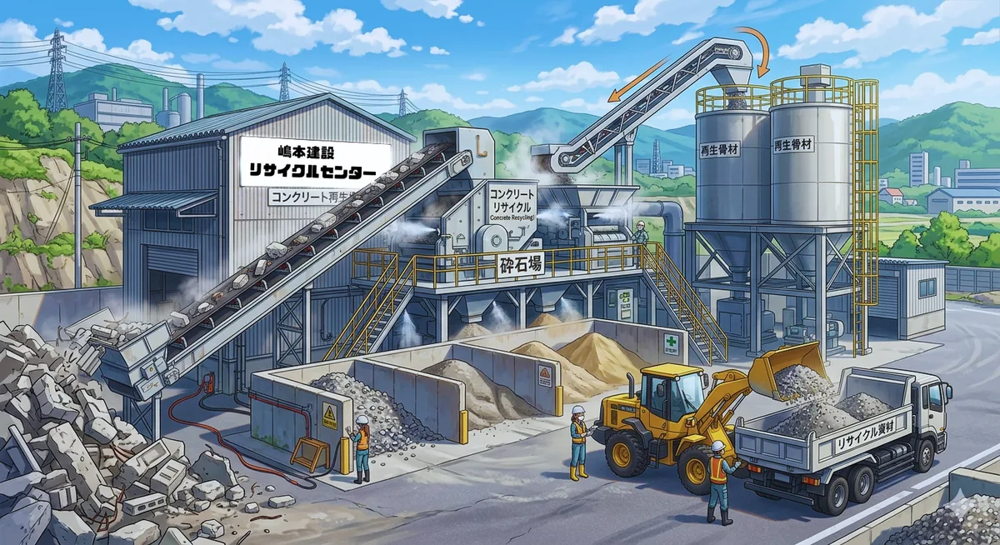
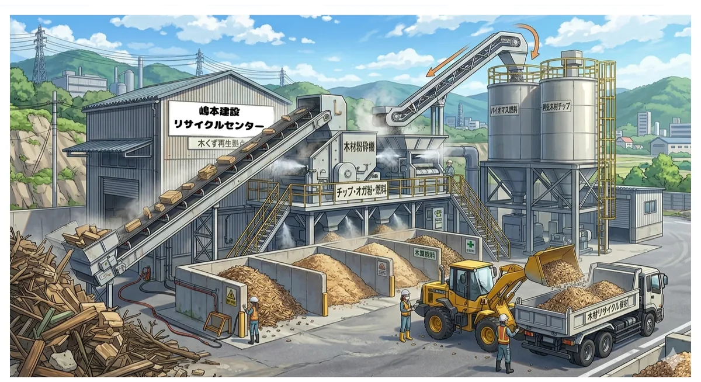

Our Service
破砕処理により再資源化を行います。
乾燥している物のみ受入可能です。
破砕・分級して再生クラッシャーランに加工します。
がれき類に付着するものに限り受入可能です。
雨天時は受入できませんのでご注意ください。
濡れたボードは受入できません。
【受入に関するご注意】
・釘・ボルト・コード等の付着は問題ありませんが、それ以外の異物が混入している場合は受入できません。
・焼瓦・ラス入りモルタル壁・サイディング・スレート等は受入不可です。
・シュロ・ソテツ系の樹木および竹根は受入不可です。草は完全に枯れた物のみ受入いたします。
・タイル付きがれきの搬入はご相談ください。
・マニフェストの提出をお願いいたします(未所持の場合は1枚100円で販売)。
・搬入台数が多くなる場合は、事前にお電話いただけますようお願いいたします。

受入れたコンクリートがれき・アスファルトがれきを、当センターの破砕・分級施設(処理能力 51.24t/日)で再生し、路盤材として広く利用できる再生クラッシャーラン(RC-40)として販売しています。
建設現場で発生した廃材を、新しい資源として循環利用する環境負荷の少ない建設資材です。2t車～10t車まで工場渡しでご用意いたします。
販売価格はお気軽にお問い合わせください。

解体材・新築廃材・樹木・草・根株・タタミなど、幅広い木質廃棄物を破砕選別施設で処理します。益城町の一般廃棄物処分業許可(木くず)も取得しており、一般廃棄物としての木くずもお任せいただけます。
シュロ・ソテツ系の樹木や竹根は受入不可、草は完全に枯れた物のみ受入可能となっておりますのでご注意ください。
廃棄物の種類・量・搬入日をお電話またはフォームでご連絡ください。
営業時間内(8:00～17:00)に当センターへご搬入いただき、計量を行います。
破砕・分級により、再資源化可能な材料へと加工します。
マニフェストに基づき、処理完了までを適正に管理します。
※ 解体工事・廃棄物の収集運搬は親会社 嶋本建設株式会社 と連携して承ります。
営業時間 8:00～17:00 / FAX 096-289-8551
※ 料金・搬入日時など、お気軽にお問い合わせください。